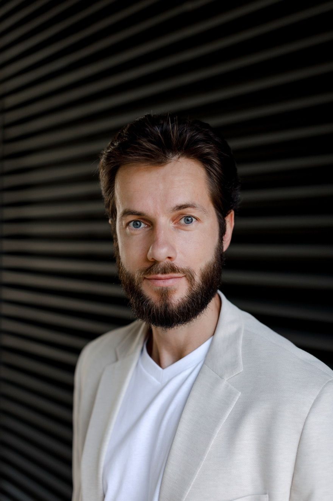

Гид академии · путь в профессию
Как стать коучем по стандартам ICF: путь от обучения до квалификация
Полная карта пути: уровни ACC, PCC и MCC, требования по часам обучения и практики, два пути подачи заявки, стоимость и реалистичные сроки. Все цифры — по данным ICF, август 2026.
Начать бесплатноПервый шаг — бесплатная программа «Профессия коуч»: 3 видео-урока и живой онлайн-тренинг, где вы проводите свою первую сессию. Бесплатно, в Telegram.

Путь к первой квалификации — ACC
Основа
Что такое ICF и что такое квалификация ICF
ICF (International Coaching Federation) — крупнейшая международная федерация коучей: она задаёт стандарт профессии через компетенции и этический кодекс ICF, аккредитует обучающие программы и присваивает коучам персональные звания — квалификация.
Профессия коуча ни в одной стране не лицензируется государством, поэтому роль «знака качества» в ней выполняет именно ICF. Федерация работает с 1995 года, объединяет десятки тысяч коучей более чем в 140 странах и ведёт открытый реестр: любой клиент или работодатель может проверить в нём статус конкретного коуча.
Важно разделять два документа. Сертификат школы подтверждает, что вы прошли обучение в конкретной организации, — его выдаёт сама школа. Квалификация ICF — персональное звание, которое присваивает федерация после независимой проверки: часов обучения, часов практики, менторинга и экзамена. Школа не может присвоить квалификацию, а ICF не проводит обучение — путь к званию всегда складывается из этих двух частей.
В основе стандарта лежат 8 ключевых компетенций коуча (ICF Core Competencies, разработаны и опубликованы ICF): от этической практики и коучингового мышления до активного слушания и содействия росту клиента. По ним построены аккредитованные программы, по ним же оценивают сессии на сертификации — так навык остаётся измеримым, а звание сравнимым между странами и школами.
Стать коучем по стандартам ICF — значит пройти обучение, набрать практику и получить своё звание в реестре федерации. Дальше разберём весь путь по шагам: уровни, требования, деньги и сроки.
Уровни квалификации
ACC, PCC и MCC: три уровня коуча по стандартам ICF
Уровни выстроены лестницей: каждый следующий требует больше обучения и практики. Начинают все с ACC — на него и стоит ориентироваться, планируя вход в профессию. Перепрыгнуть ступень нельзя в одном смысле: часы копятся последовательно, — но подавать сразу на PCC можно, если к моменту заявки набраны и образование от 125 часов, и 500 часов практики.
ACC — Associate Certified Coach
Первое звание: подтверждает, что вы владеете базовыми компетенциями и ведёте регулярную практику.
- Коуч-образование от 60 часов
- 100 часов практики, минимум 8 клиентов (75 часов — платные)
- 10 часов менторинга за 3+ месяца
- Экзамен ICF (входит в заявку)
PCC — Professional Certified Coach
Рабочий стандарт зрелого профессионала: именно PCC чаще всего требуют корпоративные заказчики.
- Коуч-образование от 125 часов
- 500 часов практики, минимум 25 клиентов (450 часов — платные)
- 10 часов менторинга за 3+ месяца
- Экзамен ICF (входит в заявку)
MCC — Master Certified Coach
Мастерский уровень: его держат единицы процентов коучей мира, это статус супервизоров и менторов.
- Действующий или прошлый PCC — обязательное условие
- Коуч-образование от 200 часов
- 2 500 часов практики, минимум 35 клиентов
- 10 часов менторинга + оценка сессий и экзамен
Квалификация действует 3 года. Для продления ICF требует 40 часов повышения квалификации (Continuing Coach Education) за цикл — звание подтверждает не разовый экзамен десятилетней давности, а актуальную форму коуча. Требования по уровням: coachingfederation.org, август 2026.
Два пути подачи
Level path и Portfolio path: почему важно, где вы учились
Заявку на квалификацию ICF принимает двумя маршрутами. Level path — для выпускников аккредитованных программ (Level 1 или Level 2): образование, менторинг и оценка сессий уже проверены при аккредитации, поэтому ICF смотрит только часы практики и экзамен. Portfolio path — для всех остальных: каждый час обучения и менторинга подтверждается документами и проверяется отдельно. Отсюда разница в пошлине и сроках.
Заявка на ACC
| Условия | Level 1 path — выпускник аккредитованной программы | Portfolio path |
|---|---|---|
| Пошлина ICF (член / не член) | $175 / $325 | $475 / $625 |
| Рассмотрение заявки | около 4 недель | около 14 недель |
| Менторинг и оценка сессии | уже пройдены внутри программы | собираете и подтверждаете документами сами |
Заявка на PCC
| Условия | Level 2 path — выпускник аккредитованной программы | Portfolio path |
|---|---|---|
| Пошлина ICF (член / не член) | $375 / $525 | $750 / $900 |
| Рассмотрение заявки | около 4 недель | около 18 недель |
| Оценка сессий | уже пройдена внутри программы | записи сессий сдаются на проверку ICF |
Практический вывод: выпускник аккредитованной программы экономит на заявке до $300 (ACC) или $375 (PCC) пошлины и от 10 до 14 недель ожидания — и ему не нужно доказывать ICF задним числом ни один час обучения. Поэтому первый фильтр при выборе школы — аккредитация организации в ICF: у Iakuban Coaching Academy это программа Level 1 «Магия и наука коучинга» (75 часов) и программа Level 2 «Путь Алхимика» (125 часов).
Пошлины и сроки: coachingfederation.org, август 2026. Экзамен ICF обязателен на обоих путях; пошлина заявки включает экзамен.
Пошаговый план
Как стать коучем по стандартам ICF: 7 шагов до звания ACC
План рассчитан на человека, который начинает с нуля. Если вы уже учились коучингу или практикуете — начните с шага 6: возможно, часть пути уже пройдена.
Попробуйте профессию на себе 1–2 недели
До того как платить за обучение, проверьте главное: подходит ли вам сама работа коуча. Посмотрите, как устроена настоящая сессия, проведите одну сами в учебном формате и оцените ощущения. Для этого достаточно бесплатных материалов — например, программы «Профессия коуч» с живым тренингом, где первую сессию вы проводите под присмотром.
Результат шага: честный ответ себе, хотите ли вы этим заниматься ближайшие годы.
Выберите аккредитованную программу 1–3 недели
Требование по образованию для ACC — от 60 часов коуч-обучения. Закрыть его можно любой программой, но аккредитованная ICF программа обучения даёт путь Level 1 со сниженной пошлиной и коротким рассмотрением заявки. Проверяйте аккредитацию самой организации в каталоге ICF и смотрите, что входит в цену: менторинг и подготовка к экзамену внутри программы экономят заметные деньги. Подробный чек-лист выбора — ниже в этом гиде.
Результат шага: выбранная программа и понятный бюджет всего пути.
Пройдите обучение 3–6 месяцев
Учёба — это не лекции про коучинг, а тренировка навыка: разборы, демо-сессии и практика в тройках, где вы по очереди коуч, клиент и наблюдатель. К концу программы вы должны уверенно проводить полную сессию по компетенциям ICF. В программе Level 1 академии это 75 часов живого онлайн-обучения за 3 месяца — с практикой с первых недель.
Результат шага: сертификат программы и навык ведения сессии, подтверждённый тренерами.
Начните практику и набирайте 100 часов 6–12 месяцев
Для заявки на ACC нужно 100 часов работы с клиентами: минимум 8 клиентов, из часов — не меньше 75 платных. Первых клиентов разумно брать ещё во время обучения: учебные тройки дают технику, а реальные клиенты — опыт и часы в зачёт. Часы фиксируются простым журналом практики: дата, клиент, длительность, оплата.
Результат шага: регулярная практика и журнал со 100 часами.
Пройдите менторинг 3+ месяца, параллельно
10 часов менторинга — обязательное требование ICF: опытный коуч разбирает ваши записи сессий и помогает дотянуть компетенции до уровня сертификации. В аккредитованных программах менторинг обычно включён (в программах академии — 7 часов группового и 3 часа личного); на Portfolio path его придётся организовывать и подтверждать отдельно.
Результат шага: закрытое требование по менторингу и заметный скачок качества сессий.
Подайте заявку в ICF около 4 недель
Заявка подаётся онлайн на coachingfederation.org: данные о программе, журнал практики, оплата пошлины. Выпускник аккредитованной программы идёт по Level 1 path — $175–325 и около 4 недель рассмотрения. На Portfolio path приложите документы по каждому часу обучения и менторинга — $475–625 и около 14 недель.
Результат шага: принятая заявка и допуск к экзамену.
Сдайте экзамен ICF — и вы в реестре 1 день
Квалификационный экзамен ICF сдаётся онлайн с прокторингом: сценарные ситуации, где нужно выбрать лучшую и худшую реакцию коуча. Проверяется практическое владение компетенциями и этикой, поэтому лучшая подготовка — сама практика плюс разбор формата экзамена (в программах академии он входит в мастермайнд по сертификации). После сдачи вы получаете звание ACC и появляетесь в открытом реестре ICF.
Результат шага: Квалификация ACC ICF — ваш статус, который проверяется в реестре за минуту.
Бюджет
Сколько стоит стать коучем по стандартам ICF
Путь до ACC складывается из трёх статей расходов. Главная из них — обучение; пошлины и членство на её фоне почти незаметны.
СТАТЬЯ 1
Обучение
≈ 1 500 – 6 500 €
Вилка русскоязычного рынка на аккредитованные программы уровня Level 1 (в российских школах — примерно 120–690 тыс. ₽). Сравнивайте не цену, а состав: менторинг, супервизия и подготовка к экзамену у одних школ включены, у других оплачиваются отдельно и добавляют сотни евро. Актуальные цены программ академии — на страницах Level 1 и Level 2.
СТАТЬЯ 2
Пошлина ICF за заявку
$175 – 625
Зависит от пути и членства: по Level 1 path — $175–325, по Portfolio path — $475–625. Пошлина включает экзамен. На PCC соответственно $375–525 против $750–900. Здесь и «окупается» аккредитованная программа: разница до $300–375 в её пользу.
СТАТЬЯ 3
Членство ICF
$270 / год
Необязательно: квалификация выдаётся и без членства. Члены платят пошлину на $150 меньше и получают доступ к сообществу, мероприятиям и материалам федерации. Частая стратегия — вступить на год подачи заявки и дальше решать по потребности.
Выбор школы
Чек-лист: как выбрать программу обучения коучингу
Шесть проверок перед оплатой. Они занимают вечер и защищают от самых дорогих ошибок — потерянного года и обучения, которое ICF не зачтёт.
Проверьте школу в каталоге аккредитованных провайдеров на coachingfederation.org: аккредитацию ICF выдаёт организации на конкретную программу. Формулировки «по стандартам ICF» или «на основе компетенций ICF» без аккредитации означают Portfolio path со всеми его пошлинами и сроками.
Для ACC нужно от 60 часов, для PCC — от 125. Смотрите именно контактные часы обучения в сертификате программы: маркетинговое «120 часов с домашними заданиями» и зачётные часы — разные вещи.
Коучинг — разговорный навык: он ставится в практике с обратной связью, как вождение. Уточните долю живых занятий, тренировок в тройках и разборов ваших сессий. Курс «в записи с проверкой тестов» навык не поставит.
10 часов менторинга — обязательное требование ICF. Если его нет в программе, добавьте к бюджету отдельную статью: у внешних менторов час стоит от 100 € и выше. В хорошей программе менторинг и супервизия уже внутри.
Учиться вести сессии имеет смысл у тех, кто сам их ведёт: смотрите звания тренеров (PCC, MCC) в реестре ICF и их реальную практику, а не только регалии на сайте школы.
После сертификата вам нужны клиенты и 100 часов. Спросите школу, как устроен старт практики: помогают ли с первыми клиентами, есть ли модуль о продвижении и цене сессии, что происходит с выпускниками через год.
Сроки
Сколько времени занимает путь до ACC и PCC
Реалистичный таймлайн для того, кто учится без спешки и параллельно работает. Быстрее возможно; медленнее — тоже нормально: часы практики никуда не сгорают.
60–75 часов живых занятий и практики в тройках. С середины программы появляются первые учебные, а затем и платные клиенты — часы уже идут в зачёт ACC.
2–3 клиента в неделю дают 100 часов примерно за 8–10 месяцев. Параллельно проходят 10 часов менторинга и подготовка к формату экзамена.
Заявка по Level 1 path рассматривается около 4 недель, после допуска сдаётся онлайн-экзамен. Итого реалистичный путь до ACC — 9–15 месяцев от первого учебного дня.
500 часов практики набираются за полтора-два года регулярной работы. Образование добирается программой Level 2 (125 часов), заявка идёт по Level 2 path. PCC к третьему году практики — сильная, но достижимая траектория.
Что ускоряет путь: старт практики во время обучения, регулярность (2–3 сессии в неделю вместо рывков) и программа, где менторинг и подготовка к экзамену уже встроены в процесс, а не откладываются «на потом».
Разбор ошибок
4 ошибки, которые дороже всего обходятся на пути к ACC
Каждую из них мы регулярно видим у коучей, которые приходят в академию после неудачного первого захода в профессию.
«Обучение по стандартам ICF» без аккредитации означает Portfolio path: пошлина выше на $300, рассмотрение дольше на 10 недель, и каждый час обучения придётся подтверждать документами. Проверка школы в каталоге ICF занимает пять минут и делается до оплаты, а не после.
Навык и часы набираются только в работе с клиентами. Кто ждёт «полной готовности», через год после выпуска приходит с нулём часов и растренированной техникой. Первые клиенты — во время обучения: так устроены сильные программы, и так 100 часов набираются почти незаметно.
Для заявки нужен журнал практики: даты, клиенты, длительность, оплата. Восстанавливать его задним числом по переписке и календарю — мучение и риск для заявки. Таблица заводится в день первой сессии и заполняется по две минуты после каждой встречи.
Экзамен ICF проверяет не память, а решения в сценариях: «выберите лучшую и худшую реакцию коуча». Помогают разбор реальных сессий, менторинг и знание этического кодекса ICF в применении, а не пересказ формулировок. Практикующие сдают его заметно легче «теоретиков».
Словарь
Термины, которые встретятся на пути
С чего начать
Первый шаг — бесплатно: попробуйте профессию до того, как платить за обучение
Программа «Профессия коуч»
Бесплатно проходит в Telegram
- Урок 1. Основы коучинга: структура сессии по этапам + PDF-схема для печати
- Урок 2. Демонстрационная сессия: запись настоящей сессии с разбором
- Урок 3. Пять принципов коучинга: позиция коуча, на которой держится работа
- Живой онлайн-тренинг с Алексеем Якубаном: вы проводите свою первую сессию и получаете обратную связь
- Сертификат академии о прохождении вводного курса коучинга
Кнопка откроет Telegram с готовым сообщением. Отправьте его, и команда академии пришлёт доступ к урокам и приглашение на живой тренинг.
Готовы идти к квалификации?
Обе программы академии аккредитованы ICF — выпускники подают заявку по короткому Level path.
К званию ACC
Программа Level 1 «Магия и наука коучинга»: 75 часов за 3 месяца, менторинг и подготовка к экзамену внутри, первые клиенты — во время обучения.
К званию PCC
Программа Level 2 «Путь Алхимика»: 125 часов за 7 месяцев, работа на глубине с менторами PCC и MCC.
Iakuban Coaching Academy — аккредитованная ICF организация: программы закрывают требования по коуч-образованию для получения квалификации ICF.
Об авторе
Автор гида
Алексей Якубан
Коуч PCC ICF · основатель Iakuban Coaching Academy
2500+ часов коучинговой практики. Прошёл описанный в гиде путь сам — от первого обучения до звания PCC — и провёл по нему сотни студентов академии. Основал Iakuban Coaching Academy, через программы которой прошли более 1000 человек, и маркетплейс коучей iakuban.com.
Частые вопросы о пути к квалификации ICF
Можно ли стать коучем по стандартам ICF без обучения?
Нет. Даже на Portfolio path, где программа не обязана быть аккредитованной, ICF требует минимум 60 часов коуч-образования для ACC и 125 часов для PCC. Обойти требование по обучению нельзя — можно только выбрать, где эти часы пройти: в аккредитованной программе (быстрее и дешевле при подаче заявки) или собирать по частям с проверкой каждого документа.
Сколько времени занимает путь до ACC?
Реалистично 9–15 месяцев от первого учебного дня: обучение 3–6 месяцев, 100 часов практики за 6–12 месяцев (частично параллельно с учёбой), заявка по Level 1 path — около 4 недель. Быстрее получается у тех, кто начинает практиковать уже во время обучения.
Сколько стоит стать коучем по стандартам ICF?
Основная статья — обучение: аккредитованные программы уровня Level 1 на русскоязычном рынке стоят примерно от 1 500 до 6 500 €. Дальше пошлина ICF за заявку на ACC: $175–325 по Level 1 path (против $475–625 по Portfolio path). Членство ICF необязательно и стоит $270 в год; для членов пошлина ниже на $150. Экзамен входит в пошлину заявки.
Чем квалификация ICF отличается от сертификата школы?
Сертификат школы подтверждает, что вы прошли обучение в конкретной организации. Квалификация ICF (ACC, PCC или MCC) — персональное звание в международном реестре: его выдаёт сама федерация после проверки обучения, часов практики, менторинга и экзамена. Компании и клиенты в 140+ странах проверяют коуча именно по реестру ICF.
Квалификация ICF выдаётся навсегда?
Нет, квалификация действует 3 года. Для продления по правилам ICF нужно набрать 40 часов повышения квалификации (Continuing Coach Education) за трёхлетний цикл. Это поддерживает актуальность навыков и отличает реестр ICF от «вечных» сертификатов.
Обязательно ли членство ICF, чтобы получить квалификацию?
Нет, квалификацию можно получить без членства. Членство стоит $270 в год и даёт скидку $150 на пошлину заявки, доступ к сообществу, мероприятиям и материалам федерации. Многие коучи вступают в ICF на год подачи заявки и дальше решают по потребности.
Что такое экзамен ICF и сложно ли его сдать?
Квалификационный экзамен ICF — онлайн-экзамен с прокторингом: сценарные вопросы, где нужно выбрать лучшую и худшую реакцию коуча в рабочих ситуациях. Проверяются компетенции и этика ICF, а не заучивание теории. Выпускники аккредитованных программ готовятся к нему в процессе обучения; отдельная подготовка к формату занимает несколько недель.
Можно ли пройти обучение на коуча по стандартам ICF онлайн?
Да. ICF засчитывает живое онлайн-обучение наравне с очным: занятия в Zoom с тренером и практикой в тройках — это контактные часы. Не засчитываются в полном объёме только «часы в записи» без взаимодействия. Онлайн-формат сегодня основной: он открывает программы и менторов из любой точки мира, а практиковать с клиентами по видеосвязи можно с первого дня.
Я уже учился коучингу в другой школе. Что из этого зачтётся?
Часы платной работы с клиентами идут в зачёт практики независимо от того, где вы учились. С образованием сложнее: если программа не была аккредитована ICF, её часы придётся подтверждать документами на Portfolio path — или добрать образование в аккредитованной программе и пойти коротким путём. Разумный первый шаг — собеседование в академии: разберём бэкграунд и честно скажем, какой маршрут короче. Если ваш опыт не коучинговая школа, а практика с картами, расчётами или системными форматами, часы такой работы в практику ICF не идут, а как добавить коуч-сессию к ней и разделить роли, мы разобрали в гайде «Для практиков».
С чего начать, если я никогда не учился коучингу?
Начните с бесплатной программы «Профессия коуч»: три видео-урока о структуре коуч-сессии, запись демо-сессии с разбором и живой онлайн-тренинг, где вы проводите первую сессию сами. После неё станет понятно, ваша ли это профессия, — и тогда имеет смысл выбирать аккредитованную ICF программу обучения (Level 1) и планировать путь к ACC. Как проходит сама сессия — разобрали в гиде о структуре коуч-сессии.